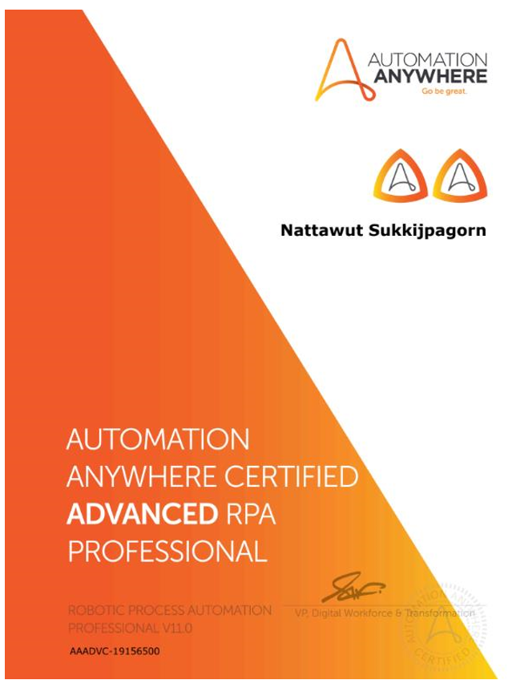
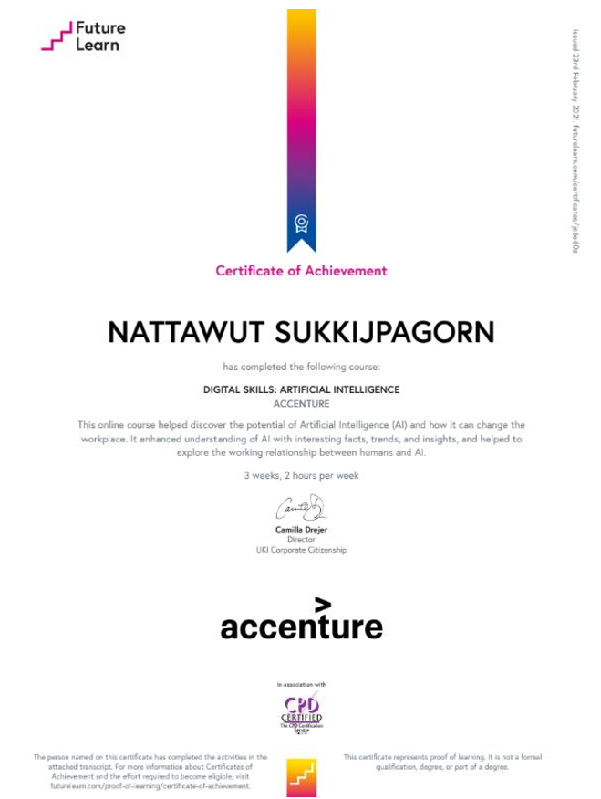
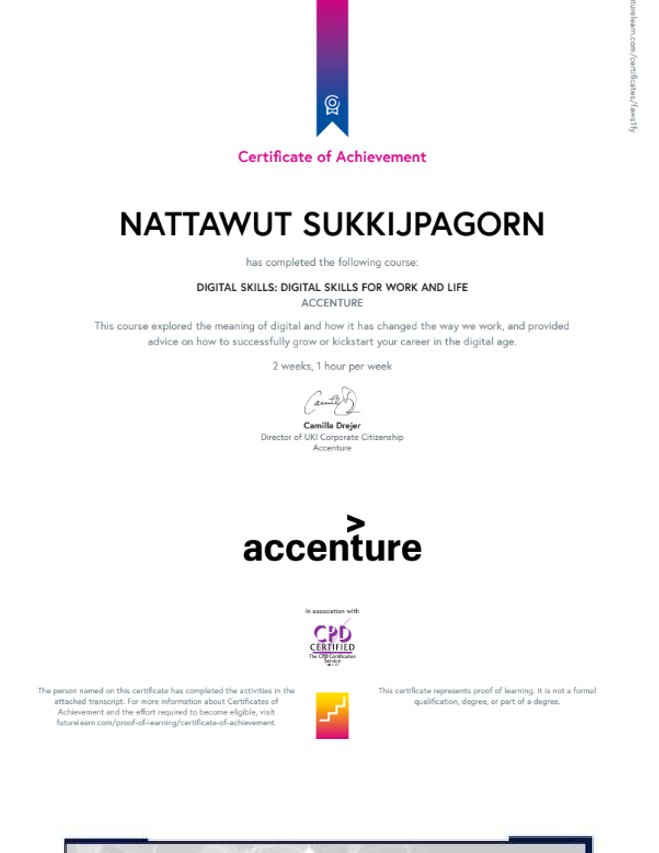
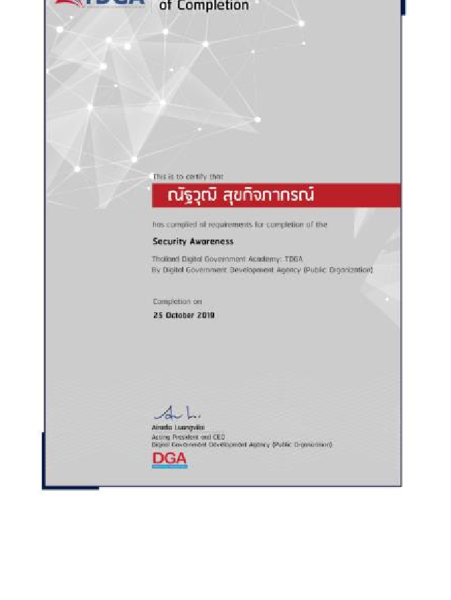
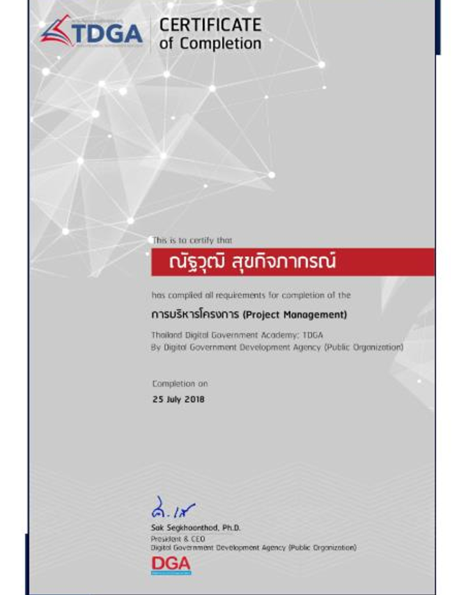
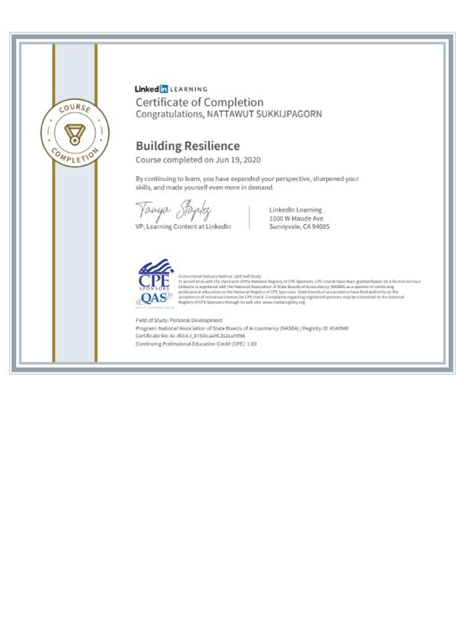
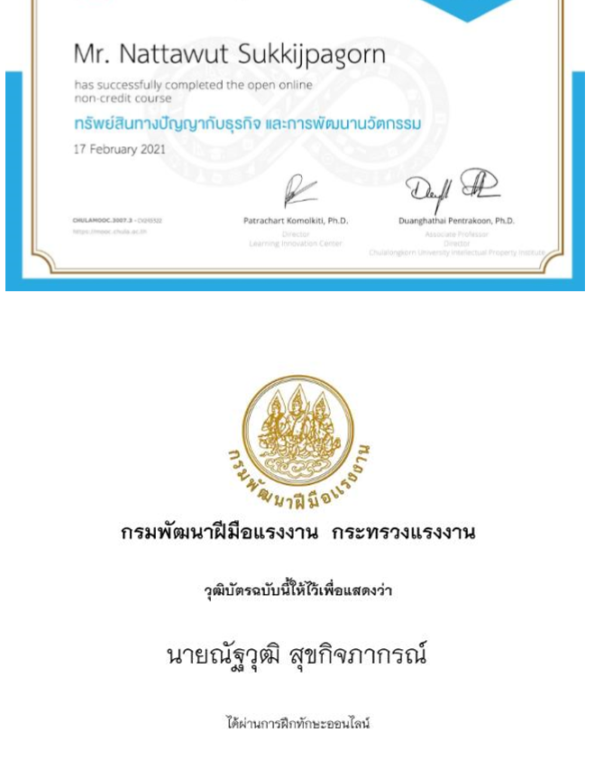
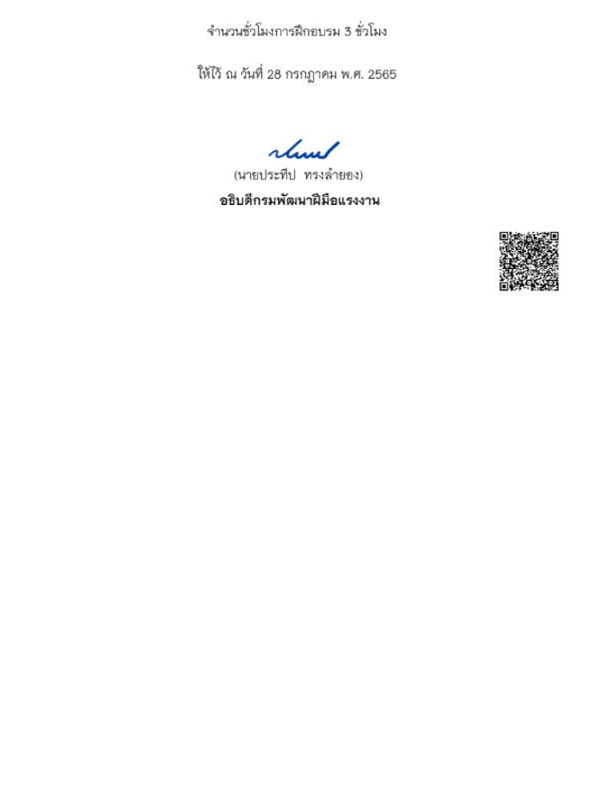

ณัฐวุฒิ สุขกิจภากรณ์
PROFESSIONAL PROFILE
"ความสำเร็จของงานไม่ได้เกิดจากความถูกต้องของตัวเลขเพียงอย่างเดียว แต่เกิดจากการทำงานร่วมกันของคน กระบวนการ ระบบ เทคโนโลยี และการเปลี่ยนแปลงขององค์กร"
เติบโตจากสายงาน Audit (KPMG) และ Accounting Operations ผ่านงาน Order to Cash, General Accounting, Overseas Accounting และ Costing ก่อนก้าวสู่งาน ERP Transformation และ Project Coordination ปัจจุบันดำรงตำแหน่ง Accounting Supervisor ณ สำนักงานบัญชีกลาง บริษัท ปูนซิเมนต์ไทย จำกัด (มหาชน) (SCG)
ประวัติการศึกษา (EDUCATION JOURNEY)
รากฐานการศึกษาตั้งแต่วิทยาศาสตร์-คณิตศาสตร์ สู่การบัญชี และการพัฒนาทรัพยากรมนุษย์ระดับปริญญาโท
มหาวิทยาลัยเทคโนโลยีพระจอมเกล้าพระนครเหนือ (KMUTNB)
ปริญญาโทศึกษาต่อยอดด้านธุรกิจอุตสาหกรรมและการพัฒนาทรัพยากรมนุษย์ เพื่อเชื่อมโยงประสบการณ์วิชาชีพบัญชีกว่า 17 ปี เข้ากับมิติมุมมองทางธุรกิจและการพัฒนาบุคลากรในยุคดิจิทัล
มหาวิทยาลัยเกษตรศาสตร์ (Kasetsart University)
ปริญญาตรีสำเร็จการศึกษาหลักสูตรบัญชีบัณฑิต พร้อมการทำกิจกรรมผู้นำนิสิตอย่างเข้มข้น ประธานรุ่นนิสิตบัญชีปี 1 และรางวัลนิสิตกิจกรรมนอกหลักสูตรดีเด่น
โรงเรียนเตรียมอุดมศึกษา (Triamudomsuksa School)
ปูพื้นฐานการคิดเชิงตรรกะ การคำนวณ และการจัดการองค์ความรู้ในสถาบันชั้นนำของประเทศ
โรงเรียนวัดบวรนิเวศ (Wat Bowonniwet School)
สำเร็จการศึกษาระดับมัธยมศึกษาตอนต้นด้วยผลการเรียนยอดเยี่ยม GPA 3.89
💡 มุมมองจากการเรียน (LEARNING PERSPECTIVE)
- เส้นทางการเรียนรู้เริ่มต้นจากรากฐานด้าน บัญชี แล้วขยายตัวผ่านประสบการณ์การทำงานจริงสู่ กระบวนการธุรกิจ (Business Processes), เทคโนโลยีสารสนเทศ (Technology) และการพัฒนาคน (People Development)
- การศึกษาระดับปริญญาโทในปัจจุบัน คือการเปิดบทใหม่: เชื่อมโยงประสบการณ์ระดับมืออาชีพเข้ากับมุมมองทางธุรกิจและการบริหารทรัพยากรมนุษย์ที่กว้างขวางและลึกซึ้งยิ่งขึ้น
ประวัติกิจกรรมระหว่างศึกษาและภาวะผู้นำ
บทบาทการเป็นผู้นำกิจกรรมค่ายอาสา ชมรมเชียร์ และรางวัลเกียรติยศแห่งความภาคภูมิใจ
Outstanding Student in Extracurricular Activities
รางวัลนิสิตผู้มีผลงานกิจกรรมนอกหลักสูตรดีเด่น มหาวิทยาลัยเกษตรศาสตร์ (2007)
1st Award — Friends Admired Man
รางวัลชนะเลิศ Friends Admired Man of Accounting Student Club, มหาวิทยาลัยเกษตรศาสตร์ (2009)
President — 1st-year Accounting Student Club
ประธานรุ่นนิสิตบัญชี ชั้นปีที่ 1 คณะบริหารธุรกิจ มหาวิทยาลัยเกษตรศาสตร์ ผู้นำการประสานงานและจัดกิจกรรมรุ่น
Vice-President — Kasetsart Cheer Club
รองประธานชมรมเชียร์ มหาวิทยาลัยเกษตรศาสตร์ และ Head — Bus Cheer 2nd Team ควบคุมดูแลการเชียร์และประสานทีมงาน
Head — 15th Accounting Camp (Chaiyaphum)
หัวหน้าค่ายบัญชีชนบท ครั้งที่ 15 (Rural Development Camp) ณ จังหวัดชัยภูมิ ดูแลการสร้างอาคารและส่งเสริมเยาวชน
Assistant Head — 14th Accounting Camp (Sukhothai)
ผู้ช่วยหัวหน้าค่ายบัญชีชนบท ครั้งที่ 14 ณ จังหวัดสุโขทัย วางแผนโลจิสติกส์และกิจกรรมค่าย
Head of Pre Accounting Camp & Year Book
Head — 15th Pre Accounting Camp, Head — Accounting Trip และ Head — Accounting Student Club Year Book Project
Leadership & Business Camps Participant
ผู้จัดและผู้เข้าร่วม Accounting Seminars, Leadership Development Training Programs และ Business Camp พัฒนาบุคลิกภาพ
ประวัติการทำงานและเส้นทางวิชาชีพ (CAREER TIMELINE)
โครงสร้างประสบการณ์: Position → Office → Process → Sub-Process → BU
📈 เส้นทางการเติบโต (CAREER ARC)
Audit Foundation (KPMG) ➔ Accounting Operations ➔ Senior Accountant ➔ Project Key User / Project Co-ordinator ➔ Accounting Supervisor (SCG)
Accounting Supervisor
กำกับดูแลงานบัญชีค้าปลีกและระบบบัญชีนอก SAP รวมทั้งขับเคลื่อนโครงการ ERP ใหม่เพื่อรองรับการเติบโตของกลุ่มธุรกิจ Cement and Green Solutions และ SCG Chemicals
Senior Accountant / Project Co-ordinator
ดูแลกระบวนการ Order to Cash และงานบัญชีทั่วไป (General Accounting) ระหว่างบริษัทในเครือ (Intercompany) ของกลุ่ม Cement-Building Materials และรับบทบาท Project Co-ordinator ในโครงการ CAD-CBM Transformation
Senior Accountant
บริหารและปิดบัญชีทั่วไป กระบวนการบัญชีระหว่างกัน การตรวจสอบความถูกต้องและจัดทำรายงานทางการเงินตามมาตรฐาน
Senior Accountant (Overseas Accounting Services)
ดูแลงานบัญชีต่างประเทศของ SCG ในฐานะ Operation Hub และบริหารบัญชีแยกประเภททั่วไป (General Ledger) ให้แก่ธุรกิจในเครือข่ายต่างประเทศ
Project Key User (SAP ECC 6.0 Project)
เป็น Key User หลักในการทดสอบ ออกแบบ และประสานงานการ Migrate ระบบบัญชีสู่ SAP ECC 6.0 ให้ครอบคลุมสองกลุ่มธุรกิจใหญ่
Accountant → Senior Accountant
ปฏิบัติการบัญชีด้านการวางบิล รับชำระเงิน และการบริหารสภาพคล่องทางการเงินให้แก่กลุ่ม SCG Trading และ SCG Chemicals
Accountant (Costing Process)
บริหารจัดการข้อมูลต้นทุนการผลิต (Costing) การวิเคราะห์ข้อมูลต้นทุนและประสิทธิภาพการดำเนินงานของกลุ่ม SCG Paper
Audit Assistant
จุดเริ่มต้นวิชาชีพในบริษัทตรวจสอบบัญชีระดับโลก ตรวจสอบงบการเงินและระบบการควบคุมภายในของบริษัทจดทะเบียนในกลุ่มอุตสาหกรรมโทรคมนาคมและสื่อ
ผลการทำงานโดดเด่น (OUTSTANDING ACHIEVEMENTS)
เมกะโปรเจกต์ ERP Transformation และแกลเลอรีใบรับรองวิชาชีพสากล
🚀 เมกะโปรเจกต์สำคัญ (KEY PROJECTS)
Mafuang Project (New ERP: Focus One)
นำการติดตั้งและปรับใช้ระบบ New ERP "Focus One" ให้แก่กลุ่ม SCG Cement and Green Solutions ครอบคลุมระบบงานค้าปลีก ระบบบัญชี และการเชื่อมโยงระบบ Non-SAP
BIC Project (CAD - CBM Transformation)
ประสานงานโครงการปรับเปลี่ยนและเพิ่มประสิทธิภาพโครงสร้างงานบัญชีระหว่าง Corporate Accounting Department (CAD) และกลุ่ม Cement-Building Materials (CBM)
SAP ECC 6.0 Project (ERP Migration)
ขับเคลื่อนการย้ายฐานข้อมูลและกระบวนการบัญชีสู่ SAP ECC 6.0 สำหรับ 2 ธุรกิจยักษ์ใหญ่ SCG Cement-Building Materials และ SCG Packaging
📜 ใบรับรองสำคัญ (SELECTED CERTIFICATIONS)
* คลิกที่การ์ดเพื่อดูภาพใบรับรองฉบับสมบูรณ์
Advanced RPA Professional (V11.0)

Digital Skills: Artificial Intelligence

Digital Skills for Work and Life

Security Awareness (ความมั่นคงปลอดภัยไซเบอร์)

Project Management (การบริหารโครงการ)

Building Resilience & Agile Mindset

ทรัพย์สินทางปัญญากับธุรกิจและนวัตกรรม

Microsoft Digital Literacy (ทักษะดิจิทัล)
กิจกรรมระหว่างทำงานและการพัฒนาตนเอง
การเรียนรู้อย่างต่อเนื่อง การเชื่อมต่องานบัญชีสู่นวัตกรรมเทคโนโลยีและการพัฒนาองค์กร
⚙️ DIGITAL & TRANSFORMATION
- ERP Implementations: ประสบการณ์ตรงใน SAP ECC 6.0 Migration และการเริ่มใช้ระบบ New ERP: Focus One
- Automation: ประยุกต์ใช้ซอฟต์แวร์หุ่นยนต์ RPA ผ่าน Automation Anywhere เพื่อลดกระบวนการบัญชีซ้ำซ้อน
- Digital Citizenship: หลักสูตรดิจิทัลจาก TDGA, Microsoft และ Accenture
💡 สิ่งที่สะท้อนจากเส้นทางนี้
"งานบัญชีไม่ได้มีแค่เรื่องบันทึกรายการและการออกรายงานตัวเลขเท่านั้น แต่ยังครอบคลุมถึงการออกแบบกระบวนการ (Process Design), สถาปัตยกรรมระบบ (Systems), บุคลากร (People), การควบคุมภายใน (Controls) และการพัฒนาอย่างต่อเนื่อง"
ทำไมจึงเรียนต่อปริญญาโทตอนนี้? (FROM ACCOUNTING OPERATIONS TO BUSINESS & PEOPLE DEVELOPMENT)
ประสบการณ์กว่า 17 ปีทำให้ผมตระหนักว่า ความสำเร็จของงานไม่ได้เกิดจากความถูกต้องของตัวเลขเพียงอย่างเดียว แต่เกิดจากการทำงานร่วมกันของคน กระบวนการ ระบบ เทคโนโลยี และการเปลี่ยนแปลงขององค์กร
การศึกษาปริญญาโทด้าน Industrial Business and Human Resource Development ณ มหาวิทยาลัยเทคโนโลยีพระจอมเกล้าพระนครเหนือ จึงเป็นการต่อยอดจากสิ่งที่พบในโลกการทำงาน เพื่อทำความเข้าใจธุรกิจและการพัฒนาคนให้ลึกซึ้งยิ่งขึ้น และนำกลับมาเชื่อมกับประสบการณ์ด้าน Accounting, Transformation และ Technology
“The purpose of this presentation is not only to show what I have done,
but to help the reader understand how those experiences shaped who I am today.”
Dashboard รายงานผลงานและสถิติสะสม
ภาพรวมสถิติประสบการณ์ 17+ ปี ความครอบคลุมธุรกิจ และดัชนีศักยภาพรอบด้าน
ปัจจุบันดูแลงาน Retail & Non-SAP Accounting และระบบ New ERP: Focus One
Order to Cash, Overseas Operations Hub, และ BIC Transformation
SAP ECC 6.0 Migration และ Costing Information Management
ช่องทางติดต่อ (CONTACT INFORMATION)
ติดต่อสื่อสาร ร่วมงาน หรือนัดหมายเพื่อแลกเปลี่ยนประสบการณ์
บริษัท ปูนซิเมนต์ไทย จำกัด (มหาชน) (SCG)